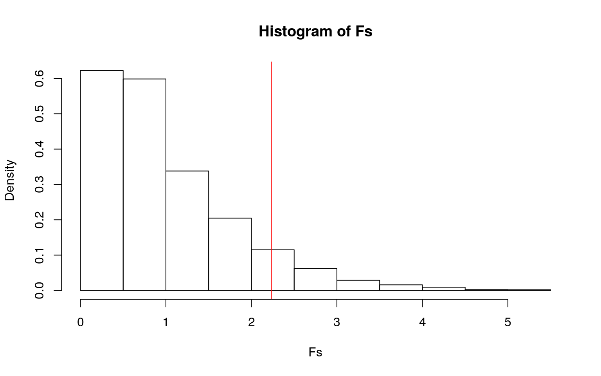

library(survival)
tdata <- transplant %>% na.omitI will be using transplant data that has informations about the patients on the liver transplant waiting list. The data includes patient's sex, age, what year they entered the waiting list, futime (time from entry to final disposition), blood type(A,B,O,AB), and the event (final disposition: censored, death, ltx or withdraw). There are 815 observations total, but I will be removing all the observations with NAs, which comes down to 797 observations.
library(rstatix)
library(dplyr)
library(tidyverse)
library(dplyr, warn.conflicts = FALSE)
options(dplyr.summarise.inform = FALSE)
library(lmtest)
library(sandwich)
group <- tdata$sex
DVs <- tdata %>% select(age,year,futime)
#Test multivariate normality for each group (null: assumption met)
sapply(split(DVs,group), mshapiro_test)## m f
## statistic 0.7717381 0.8576707
## p.value 3.119139e-24 1.38793e-17#MANOVA
man1<-manova(cbind(age,year,futime)~sex, data=tdata)
summary(man1)## Df Pillai approx F num Df den Df Pr(>F)
## sex 1 0.011924 3.19 3 793 0.02313 *
## Residuals 795
## ---
## Signif. codes: 0 '***' 0.001 '**' 0.01 '*' 0.05 '.' 0.1
' ' 1#Univariate ANOVA
summary.aov(man1) ## Response age :
## Df Sum Sq Mean Sq F value Pr(>F)
## sex 1 74 74.293 0.6991 0.4033
## Residuals 795 84487 106.272
##
## Response year :
## Df Sum Sq Mean Sq F value Pr(>F)
## sex 1 56.2 56.168 8.1554 0.004405 **
## Residuals 795 5475.3 6.887
## ---
## Signif. codes: 0 '***' 0.001 '**' 0.01 '*' 0.05 '.' 0.1
' ' 1
##
## Response futime :
## Df Sum Sq Mean Sq F value Pr(>F)
## sex 1 24001 24001 0.3645 0.5462
## Residuals 795 52345763 65844tdata%>%group_by(sex)%>%summarize(mean(age),mean(year),mean(futime))## # A tibble: 2 x 4
## sex `mean(age)` `mean(year)` `mean(futime)`
## <fct> <dbl> <dbl> <dbl>
## 1 m 50.2 1995. 219.
## 2 f 50.9 1995. 208.#t-tests
pairwise.t.test(tdata$year, tdata$sex, p.adj = "none")##
## Pairwise comparisons using t tests with pooled SD
##
## data: tdata$year and tdata$sex
##
## m
## f 0.0044
##
## P value adjustment method: nonepairwise.t.test(tdata$age, tdata$sex, p.adj = "none")##
## Pairwise comparisons using t tests with pooled SD
##
## data: tdata$age and tdata$sex
##
## m
## f 0.4
##
## P value adjustment method: nonepairwise.t.test(tdata$futime, tdata$sex, p.adj = "none")##
## Pairwise comparisons using t tests with pooled SD
##
## data: tdata$futime and tdata$sex
##
## m
## f 0.55
##
## P value adjustment method: noneFrom the multivariate normality assumptions for each group, the p-values were less than 0.05 for both male and females, meaning that the normality assumptions are not met. A one-way MANOVA was conducted to determine the effect of the sex (male or female) on two dependent variables (entrance year,age, and futime). The one-way MANOVA showed that for at least one DV (age, year, futime), the mean is different for one sex with a p-value of 0.02313. Next, I ran a one-way ANOVA, which showed that for the year they enetered the waiting list, there is a significant difference between the sexes. The mean age of females is 50.86, and for males, it is 50.24. The mean year of enterance for females is 1995.903, and for males is 1995.436.The mean futime for females is 208.23, and for males, it is 219.26. I ran a t-test for year and sex, which resulted in a p-value of 0.0044. However, the t-test for age and sex and for futime and sex were insignificant. For alpha, I used 0.05/5 = 0.01 (1 MANOVA,1 ANOVA, 3 t-test). The t-test between year and sex, MANOVA, ANOVA results are still significant with the adjusted alpha value. The probability of a type-I error is 1-0.95^5 = 0.226219.
fit3<-lm(age~event, data= tdata)
summary(fit3)##
## Call:
## lm(formula = age ~ event, data = tdata)
##
## Residuals:
## Min 1Q Median 3Q Max
## -33.210 -7.210 0.790 7.513 21.790
##
## Coefficients:
## Estimate Std. Error t value Pr(>|t|)
## (Intercept) 52.487 1.179 44.498 <2e-16 ***
## eventdeath -0.199 1.730 -0.115 0.9085
## eventltx -2.276 1.250 -1.821 0.0689 .
## eventwithdraw -3.973 2.061 -1.928 0.0543 .
## ---
## Signif. codes: 0 '***' 0.001 '**' 0.01 '*' 0.05 '.' 0.1
' ' 1
##
## Residual standard error: 10.28 on 793 degrees of freedom
## Multiple R-squared: 0.008379, Adjusted R-squared:
0.004627
## F-statistic: 2.233 on 3 and 793 DF, p-value: 0.08296summary(aov(age~event,data=tdata))## Df Sum Sq Mean Sq F value Pr(>F)
## event 3 708 236.2 2.233 0.083 .
## Residuals 793 83852 105.7
## ---
## Signif. codes: 0 '***' 0.001 '**' 0.01 '*' 0.05 '.' 0.1
' ' 1F_obs<-2.233
Fs<-replicate(5000,{
new<-tdata%>%mutate(age=sample(age))
SSW<- new%>%group_by(event)%>%summarize(SSW=sum((age-mean(age))^2))%>%
summarize(sum(SSW))%>%pull
SSB<- new%>%mutate(mean=mean(age))%>%group_by(event)%>%mutate(groupmean=mean(age))%>%
summarize(SSB=sum((mean-groupmean)^2))%>%summarize(sum(SSB))%>%pull
(SSB/2)/(SSW/794)
})
mean(Fs>F_obs) ## [1] 0.2234hist(Fs,prob = T); abline(v=F_obs, col="red", add=T) Null hypothesis: The event or the final disposition of the patient does not explain variation in age. Alternate hypothesis: The event or the final disposition of the patient does explain variation in age.
The observed f-statistic was 2.233. The randomization test revealed a p-value of 0.2166, which means we fail to reject the null hypothesis, so the event or the final disposition of the patient does not explain variation in age. None of the 5000 F-statistics (Fs) generated under the null hypothesis were bigger than the actual F statistic (F_obs) of 2.233.
##What predicts futime
library(tidyverse)
tdata## age sex abo year futime event
## 1 47 m B 1994 1197 death
## 2 55 m A 1991 28 ltx
## 3 52 m B 1996 85 ltx
## 4 40 f O 1995 231 ltx
## 5 70 m O 1996 1271 censored
## 6 66 f O 1996 58 ltx
## 7 41 f A 1998 392 ltx
## 8 55 m O 1998 30 ltx
## 9 50 m A 1990 12 ltx
## 10 61 m A 1991 139 ltx
## 11 58 m A 1990 9 ltx
## 12 61 m A 1999 451 censored
## 13 38 f O 1994 135 ltx
## 14 37 m O 1997 309 ltx
## 15 66 f B 1998 536 ltx
## 16 50 m B 1996 46 ltx
## 17 60 m O 1992 15 ltx
## 18 34 f A 1997 97 ltx
## 19 39 f AB 1994 0 ltx
## 20 53 f A 1995 277 death
## 21 39 f O 1995 231 ltx
## 22 62 f O 1995 223 ltx
## 23 63 f O 1991 4 ltx
## 24 55 m O 1997 43 censored
## 25 57 m O 1992 41 ltx
## 26 50 f B 1995 250 ltx
## 27 44 m O 1997 364 ltx
## 28 50 m O 1990 129 ltx
## 29 56 m A 1999 527 ltx
## 30 65 f B 1996 173 ltx
## 31 62 f A 1994 74 ltx
## 32 40 f A 1990 24 ltx
## 33 34 m A 1997 105 ltx
## 34 43 f A 1999 310 ltx
## 35 57 f B 1995 123 ltx
## 36 43 f O 1994 171 ltx
## 37 38 f O 1992 29 ltx
## 38 58 f O 1998 7 ltx
## 39 45 f O 1990 5 ltx
## 40 47 m A 1995 199 ltx
## 41 64 f A 1998 547 censored
## 42 60 f O 1999 374 ltx
## 43 65 m O 1993 135 ltx
## 44 55 m A 1990 52 ltx
## 45 37 f A 1993 122 ltx
## 46 65 m O 1998 306 ltx
## 47 44 f B 1992 45 ltx
## 48 64 m B 1997 234 ltx
## 49 66 f O 1994 173 ltx
## 50 57 m A 1992 8 ltx
## 51 54 m O 1991 1 ltx
## 52 38 m A 1994 53 ltx
## 53 53 m A 1993 32 death
## 54 61 f A 1997 157 ltx
## 55 65 f AB 1999 329 ltx
## 56 62 f B 1991 18 death
## 57 53 m A 1992 1 ltx
## 58 51 f O 1992 34 ltx
## 59 46 m AB 1998 346 ltx
## 60 60 f A 1990 4 ltx
## 61 56 f O 1990 107 ltx
## 62 67 f O 1993 166 ltx
## 63 58 m O 1999 147 censored
## 64 48 f A 1990 48 ltx
## 65 52 f A 1994 20 death
## 66 43 m O 1992 10 death
## 67 45 m A 1998 170 ltx
## 68 64 m O 1994 104 ltx
## 69 54 f A 1990 25 ltx
## 70 54 m A 1995 60 ltx
## 71 31 f B 1996 168 ltx
## 73 59 f O 1990 12 ltx
## 74 59 f A 1990 29 ltx
## 75 49 m O 1992 31 ltx
## 76 59 m A 1999 304 ltx
## 77 42 m A 1999 127 ltx
## 78 64 f A 1992 73 ltx
## 79 28 m A 1994 89 ltx
## 80 57 m O 1995 231 ltx
## 82 54 f A 1998 581 censored
## 83 44 m A 1990 6 ltx
## 84 58 f O 1994 172 ltx
## 85 64 f O 1995 269 death
## 86 64 f B 1992 48 ltx
## 87 54 f A 1997 81 ltx
## 88 42 f AB 1991 26 ltx
## 89 36 f O 1999 406 censored
## 90 61 f AB 1994 99 ltx
## 91 54 f O 1997 446 ltx
## 92 50 m O 1998 295 ltx
## 93 35 f A 1991 3 ltx
## 94 42 f A 1991 8 ltx
## 95 64 f A 1992 59 ltx
## 96 60 f O 1995 359 withdraw
## 98 58 f O 1999 457 censored
## 99 56 f B 1995 826 ltx
## 100 60 f B 1995 207 ltx
## 101 50 m AB 1998 56 ltx
## 102 54 f B 1998 667 censored
## 103 64 m A 1994 75 ltx
## 104 64 f O 1993 137 ltx
## 105 44 f A 1995 38 ltx
## 106 37 f O 1990 106 ltx
## 107 46 m O 1997 330 ltx
## 108 39 f A 1992 19 ltx
## 109 50 f O 1993 187 ltx
## 110 46 m A 1991 19 ltx
## 111 53 f O 1995 202 ltx
## 112 48 f O 1990 33 ltx
## 113 63 m A 1992 72 ltx
## 114 50 m B 1992 34 ltx
## 115 56 m B 1997 61 ltx
## 117 57 m O 1996 70 ltx
## 118 63 m A 1990 327 death
## 119 40 f A 1990 21 ltx
## 120 64 f O 1990 86 ltx
## 121 61 f O 1990 35 ltx
## 123 40 f B 1995 322 ltx
## 124 56 m O 1995 203 ltx
## 125 61 f O 1992 120 ltx
## 126 52 f O 1993 109 ltx
## 127 47 f A 1992 156 ltx
## 128 59 f O 1995 276 ltx
## 129 52 f A 1998 672 censored
## 130 43 m O 1999 49 ltx
## 131 48 f O 1995 244 ltx
## 132 66 m A 1996 107 ltx
## 133 43 m A 1993 143 ltx
## 134 63 m A 1992 40 ltx
## 135 52 m A 1991 20 ltx
## 136 57 f B 1994 197 ltx
## 137 39 f O 1992 86 ltx
## 138 58 m B 1998 38 death
## 139 72 m AB 1996 20 ltx
## 140 52 f O 1990 40 ltx
## 141 41 f A 1993 50 death
## 142 61 f O 1996 585 ltx
## 143 49 f O 1991 59 ltx
## 144 48 f A 1995 152 ltx
## 145 43 f O 1990 37 ltx
## 146 71 f A 1996 105 ltx
## 147 46 f O 1993 149 ltx
## 148 47 f A 1991 96 ltx
## 149 54 m AB 1993 194 ltx
## 150 53 m AB 1999 242 ltx
## 151 53 f A 1996 68 ltx
## 152 52 m A 1995 157 ltx
## 153 52 f B 1998 298 death
## 154 50 m O 1996 317 death
## 155 44 f A 1999 336 ltx
## 156 52 f O 1990 22 ltx
## 157 27 m A 1995 329 ltx
## 158 72 m B 1991 35 ltx
## 159 46 f O 1990 91 ltx
## 160 61 m A 1992 73 ltx
## 161 63 m O 1996 182 ltx
## 162 53 m O 1992 75 ltx
## 163 35 f O 1991 50 ltx
## 164 36 f O 1991 31 ltx
## 165 54 m B 1998 50 ltx
## 166 42 m A 1994 113 ltx
## 167 61 m B 1990 44 ltx
## 168 44 f O 1997 480 ltx
## 169 55 f A 1996 146 ltx
## 170 29 m A 1997 110 ltx
## 171 48 f A 1994 1 ltx
## 172 62 f A 1992 15 ltx
## 173 54 f O 1995 217 ltx
## 174 59 f O 1992 72 ltx
## 175 29 f A 1993 6 ltx
## 176 50 m A 1996 51 ltx
## 177 51 m O 1992 51 ltx
## 178 47 f O 1996 292 ltx
## 179 30 m O 1994 122 ltx
## 180 41 f B 1997 260 ltx
## 181 57 f O 1995 50 ltx
## 182 52 m A 1994 35 ltx
## 183 54 f A 1999 460 censored
## 184 59 f B 1993 57 withdraw
## 185 30 f A 1996 26 ltx
## 186 47 f A 1991 95 ltx
## 187 58 m A 1996 103 ltx
## 188 32 m A 1990 9 ltx
## 189 63 f A 1997 190 ltx
## 190 52 f B 1995 41 death
## 191 70 f A 1995 131 ltx
## 192 45 m A 1999 525 censored
## 193 43 f A 1993 90 ltx
## 194 47 m A 1993 99 ltx
## 195 42 f A 1999 266 ltx
## 196 35 m A 1994 100 ltx
## 197 48 f A 1994 65 ltx
## 198 57 f A 1998 124 ltx
## 199 53 m O 1995 269 ltx
## 200 51 m O 1990 35 ltx
## 201 40 f O 1991 118 ltx
## 202 56 f O 1990 5 ltx
## 203 47 m O 1996 899 ltx
## 204 55 m A 1994 64 ltx
## 205 61 f A 1995 103 ltx
## 206 54 m A 1998 289 ltx
## 207 54 f A 1993 64 ltx
## 208 62 m O 1991 25 death
## 209 62 f B 1992 45 ltx
## 210 47 f A 1990 19 ltx
## 211 53 f B 1997 274 ltx
## 212 53 m A 1996 139 ltx
## 213 59 m A 1990 104 ltx
## 214 37 f A 1993 98 ltx
## 215 41 f A 1991 47 ltx
## 216 36 f B 1991 115 ltx
## 217 60 f A 1996 138 ltx
## 219 36 m A 1992 94 ltx
## 220 64 m A 1991 64 ltx
## 221 55 f A 1990 1422 death
## 222 57 f B 1994 33 ltx
## 223 40 m A 1996 142 ltx
## 224 40 m A 1992 9 ltx
## 225 41 m A 1992 50 ltx
## 226 33 f A 1992 1 ltx
## 227 38 m A 1992 39 ltx
## 228 56 m A 1998 502 ltx
## 229 57 m O 1993 149 ltx
## 231 56 m A 1994 70 ltx
## 232 51 m A 1997 105 ltx
## 233 23 f A 1990 30 ltx
## 234 43 f A 1990 37 ltx
## 235 49 m O 1993 155 ltx
## 236 38 m A 1999 629 ltx
## 237 33 m O 1992 55 ltx
## 238 50 f O 1995 309 ltx
## 239 65 f B 1999 212 ltx
## 240 40 m O 1997 205 ltx
## 241 38 m A 1992 9 ltx
## 242 59 m O 1997 194 ltx
## 243 56 m A 1997 211 death
## 244 45 f A 1998 677 censored
## 245 37 f A 1997 111 ltx
## 246 63 m A 1996 63 ltx
## 247 54 f O 1992 72 ltx
## 248 58 f B 1996 85 ltx
## 249 27 m O 1997 319 ltx
## 250 45 m A 1998 483 censored
## 251 52 f B 1995 250 ltx
## 252 47 f A 1994 48 ltx
## 253 54 f O 1993 174 ltx
## 254 19 f AB 1990 7 ltx
## 255 56 f B 1990 24 ltx
## 256 47 m A 1994 17 death
## 257 49 m A 1994 85 ltx
## 258 51 f A 1990 19 ltx
## 259 56 m B 1993 2055 ltx
## 260 51 f A 1990 46 ltx
## 261 61 f A 1994 102 ltx
## 262 68 f A 1990 3 ltx
## 263 58 f A 1990 28 ltx
## 264 56 f A 1992 92 ltx
## 265 33 m O 1990 35 ltx
## 266 42 m O 1991 52 ltx
## 267 26 f A 1996 121 ltx
## 268 41 f AB 1990 21 ltx
## 269 42 f A 1995 1 ltx
## 270 48 f O 1990 76 ltx
## 271 35 f A 1993 136 ltx
## 272 61 f B 1996 123 withdraw
## 273 59 m O 1993 0 death
## 274 57 m O 1993 58 ltx
## 276 55 m A 1990 45 ltx
## 277 50 f B 1991 83 ltx
## 278 62 f B 1995 247 ltx
## 279 44 f AB 1996 28 ltx
## 280 51 m O 1990 88 ltx
## 281 46 m A 1990 5 ltx
## 282 58 f A 1995 108 ltx
## 283 50 m A 1991 93 ltx
## 284 54 f A 1991 107 ltx
## 285 48 m A 1998 47 ltx
## 286 62 m O 1991 89 ltx
## 287 43 m AB 1991 18 ltx
## 288 44 m O 1999 500 death
## 290 63 m A 1993 80 ltx
## 291 42 m O 1991 111 ltx
## 292 44 m B 1991 80 ltx
## 293 47 m B 1994 115 ltx
## 294 62 m A 1997 130 ltx
## 295 59 m O 1991 41 death
## 297 39 m B 1991 18 ltx
## 298 33 f O 1991 43 ltx
## 300 42 m A 1991 45 death
## 301 41 m A 1991 141 death
## 302 41 m O 1999 559 ltx
## 303 26 m B 1996 8 ltx
## 304 69 m A 1991 4 ltx
## 305 28 m A 1991 7 ltx
## 306 49 f O 1993 169 ltx
## 307 48 m B 1992 60 ltx
## 308 49 m O 1996 554 ltx
## 309 55 m O 1993 6 death
## 310 43 m A 1998 153 ltx
## 312 57 m A 1991 26 ltx
## 313 60 m B 1992 55 ltx
## 314 65 m O 1998 74 ltx
## 315 49 m O 1991 25 ltx
## 316 55 m O 1997 2 ltx
## 317 56 m B 1992 29 ltx
## 318 48 f O 1991 37 ltx
## 319 46 m O 1996 282 ltx
## 321 52 f A 1992 1 ltx
## 322 46 m O 1992 85 ltx
## 323 20 f B 1991 2 ltx
## 324 43 f O 1993 116 ltx
## 325 56 m A 1993 107 ltx
## 326 42 m O 1997 1096 ltx
## 327 41 f B 1994 97 ltx
## 328 69 f A 1994 70 ltx
## 329 57 f A 1991 13 ltx
## 330 48 f O 1992 73 ltx
## 331 35 m A 1996 105 ltx
## 332 46 m A 1992 19 ltx
## 333 67 f A 1994 49 ltx
## 334 64 f A 1992 4 ltx
## 335 31 m O 1996 576 ltx
## 336 63 m O 1992 36 ltx
## 337 66 f B 1993 32 ltx
## 338 53 m AB 1992 4 ltx
## 339 46 m O 1992 53 ltx
## 340 30 m A 1992 3 ltx
## 341 31 m A 1994 99 ltx
## 342 53 m O 1997 196 withdraw
## 343 59 f O 1992 68 ltx
## 344 46 m A 1993 96 ltx
## 345 56 f O 1998 674 censored
## 346 60 f A 1996 173 ltx
## 347 53 m A 1992 11 ltx
## 348 56 m O 1992 38 ltx
## 350 36 f O 1992 4 ltx
## 351 43 m A 1992 43 ltx
## 352 67 m O 1992 30 ltx
## 353 57 m A 1992 5 death
## 354 50 f O 1992 96 ltx
## 355 55 m A 1992 6 ltx
## 356 63 f A 1992 62 ltx
## 357 48 m B 1999 348 censored
## 358 26 m O 1994 1899 censored
## 359 57 m O 1994 173 ltx
## 360 52 m A 1992 59 ltx
## 361 39 m A 1994 85 ltx
## 362 51 f O 1995 293 ltx
## 363 57 f O 1992 59 ltx
## 364 54 f A 1996 56 ltx
## 365 47 m A 1992 69 ltx
## 366 57 m A 1993 52 ltx
## 367 29 m A 1993 214 ltx
## 368 45 m A 1992 13 death
## 369 50 m B 1993 61 ltx
## 370 43 m A 1992 15 ltx
## 371 50 m A 1996 96 ltx
## 372 53 m B 1992 91 ltx
## 373 66 m A 1993 75 ltx
## 374 61 f A 1999 335 ltx
## 375 67 f O 1992 154 withdraw
## 376 40 f O 1992 146 death
## 377 41 f O 1995 261 ltx
## 381 56 f O 1998 339 ltx
## 382 42 m O 1993 38 ltx
## 383 60 f A 1995 81 ltx
## 384 45 f A 1995 94 ltx
## 385 65 m O 1993 154 ltx
## 386 25 f O 1993 110 ltx
## 387 38 m O 1993 173 ltx
## 388 46 m O 1994 140 ltx
## 389 48 f A 1994 99 ltx
## 390 58 f A 1995 83 ltx
## 391 61 f B 1993 11 ltx
## 392 38 f O 1993 175 ltx
## 393 41 f A 1994 93 ltx
## 394 53 m O 1993 44 death
## 395 50 m A 1993 157 ltx
## 396 52 m B 1993 74 ltx
## 397 43 m O 1994 124 ltx
## 398 50 f O 1996 284 ltx
## 399 45 m O 1994 189 ltx
## 400 69 m A 1993 57 ltx
## 401 41 m A 1993 184 ltx
## 402 58 f O 1993 158 ltx
## 403 50 f O 1993 208 ltx
## 404 56 f AB 1993 485 death
## 405 29 f A 1993 48 ltx
## 406 42 f O 1995 260 ltx
## 407 50 f O 1993 143 ltx
## 408 45 f O 1993 39 ltx
## 409 57 m A 1993 211 ltx
## 410 52 m A 1993 105 ltx
## 411 66 f A 1993 39 ltx
## 412 57 m A 1993 10 death
## 413 47 m O 1993 198 ltx
## 414 44 f O 1997 1098 censored
## 415 56 f O 1993 139 ltx
## 416 33 m O 1996 343 ltx
## 417 62 f B 1994 256 ltx
## 418 60 f A 1997 1268 censored
## 419 37 m AB 1993 189 withdraw
## 420 56 f O 1998 403 ltx
## 421 29 f B 1994 15 ltx
## 422 49 f B 1997 30 death
## 423 60 f O 1995 43 withdraw
## 424 57 f B 1993 36 ltx
## 425 65 m AB 1994 78 ltx
## 426 65 m A 1993 74 ltx
## 427 46 m O 1994 166 ltx
## 428 66 m O 1994 128 ltx
## 429 51 m A 1993 86 ltx
## 430 51 m A 1997 357 ltx
## 431 47 m AB 1993 3 death
## 432 42 m O 1993 158 ltx
## 433 36 m O 1996 388 ltx
## 434 28 f O 1993 83 withdraw
## 435 52 m O 1994 128 ltx
## 436 42 m B 1999 557 censored
## 437 58 f O 1994 156 ltx
## 438 67 m B 1994 121 ltx
## 439 54 f A 1994 100 ltx
## 440 30 m B 1994 18 ltx
## 441 53 m O 1994 387 withdraw
## 442 23 f B 1994 36 ltx
## 443 61 m O 1996 445 ltx
## 444 49 f O 1996 272 ltx
## 445 61 m A 1998 173 ltx
## 446 38 f O 1994 144 withdraw
## 447 33 m A 1994 10 ltx
## 448 44 f O 1994 169 ltx
## 449 65 f A 1994 92 ltx
## 450 48 m A 1994 54 ltx
## 451 62 f A 1994 119 ltx
## 452 68 f A 1994 25 ltx
## 453 27 m O 1999 39 death
## 454 24 f O 1994 308 ltx
## 455 60 f O 1994 193 ltx
## 456 54 m A 1995 261 withdraw
## 457 44 f A 1994 302 withdraw
## 458 55 f B 1994 95 withdraw
## 459 39 m O 1994 20 death
## 460 61 m O 1994 153 ltx
## 461 65 m O 1995 263 ltx
## 462 18 f AB 1994 97 withdraw
## 463 39 m A 1995 97 ltx
## 464 50 m O 1995 69 ltx
## 465 25 f B 1994 259 ltx
## 466 61 f AB 1997 84 ltx
## 467 56 m O 1997 41 ltx
## 468 33 m B 1995 94 ltx
## 469 54 m O 1995 214 ltx
## 470 50 m O 1995 103 ltx
## 471 46 m O 1994 126 ltx
## 472 56 f A 1998 751 censored
## 473 52 m A 1994 95 ltx
## 474 47 m A 1994 12 ltx
## 475 43 f A 1997 159 ltx
## 476 43 m A 1994 10 ltx
## 477 56 f B 1994 223 ltx
## 478 54 m O 1994 137 ltx
## 479 53 m O 1998 9 censored
## 480 49 f A 1994 97 ltx
## 481 45 m O 1995 677 withdraw
## 482 50 f O 1996 517 ltx
## 483 64 m A 1994 34 withdraw
## 484 50 m O 1994 181 ltx
## 485 59 f AB 1994 70 ltx
## 486 41 f O 1997 618 ltx
## 487 50 f O 1996 498 ltx
## 488 58 f A 1997 150 ltx
## 489 43 m A 1995 89 ltx
## 490 50 m A 1998 566 censored
## 491 67 m O 1999 347 censored
## 492 52 f O 1995 292 ltx
## 493 22 f O 1995 64 ltx
## 494 64 m A 1995 95 ltx
## 495 61 f O 1995 180 ltx
## 496 47 f O 1996 129 withdraw
## 497 66 f O 1995 139 ltx
## 498 45 m O 1995 259 ltx
## 499 57 f O 1995 395 ltx
## 500 50 m A 1995 62 ltx
## 501 56 f A 1995 87 ltx
## 502 54 f O 1993 159 ltx
## 503 49 m O 1992 23 death
## 505 40 m AB 1992 68 ltx
## 506 49 m A 1992 11 ltx
## 507 55 m A 1993 114 ltx
## 508 65 f O 1996 185 ltx
## 509 48 f A 1994 102 ltx
## 510 32 m B 1994 268 ltx
## 511 55 f O 1995 307 ltx
## 512 42 m O 1995 35 withdraw
## 513 54 m O 1995 262 ltx
## 514 58 m A 1995 46 ltx
## 515 64 m O 1997 129 ltx
## 516 56 m O 1996 525 ltx
## 517 48 m A 1997 63 ltx
## 518 53 f O 1997 617 ltx
## 519 60 m O 1997 158 death
## 520 36 m A 1990 26 ltx
## 521 30 m O 1994 173 ltx
## 522 55 f O 1994 158 ltx
## 523 43 f A 1995 276 ltx
## 524 55 f A 1992 1 ltx
## 525 53 m AB 1992 52 ltx
## 526 63 f A 1996 63 ltx
## 527 61 m A 1994 96 ltx
## 528 65 m A 1993 123 ltx
## 529 39 f A 1995 27 withdraw
## 530 69 f A 1995 76 death
## 531 46 m O 1996 677 withdraw
## 532 37 m AB 1996 60 ltx
## 533 60 m O 1995 75 death
## 534 62 m A 1995 89 ltx
## 535 66 f O 1995 51 death
## 536 38 m A 1996 154 ltx
## 537 49 f A 1995 3 ltx
## 538 66 m B 1995 127 ltx
## 539 41 f A 1995 45 ltx
## 540 48 f AB 1998 4 ltx
## 541 51 m A 1996 18 ltx
## 542 54 f O 1996 340 ltx
## 543 68 f O 1997 193 ltx
## 544 44 f A 1996 71 ltx
## 545 39 m O 1996 492 ltx
## 546 36 f A 1998 180 ltx
## 547 48 f A 1996 144 ltx
## 548 49 f A 1997 153 withdraw
## 549 40 f O 1997 246 ltx
## 550 53 m O 1997 927 death
## 551 67 f B 1997 383 withdraw
## 552 60 f B 1997 138 ltx
## 553 59 m A 1997 136 ltx
## 554 61 m A 1995 79 ltx
## 555 37 m A 1995 205 ltx
## 556 60 f O 1995 213 ltx
## 557 61 m AB 1995 26 death
## 558 67 m A 1995 33 ltx
## 559 63 f A 1995 47 ltx
## 560 53 f A 1995 65 ltx
## 561 52 m O 1996 302 ltx
## 562 37 f A 1995 186 ltx
## 563 47 m O 1995 105 ltx
## 564 53 f O 1999 631 censored
## 565 39 f A 1996 81 ltx
## 566 54 f A 1996 108 death
## 567 65 f B 1995 25 withdraw
## 568 46 m AB 1996 33 ltx
## 569 46 f A 1995 83 ltx
## 570 47 m A 1995 137 ltx
## 571 40 m O 1995 18 ltx
## 572 37 m O 1998 609 censored
## 573 70 m A 1995 29 withdraw
## 574 54 m B 1996 231 ltx
## 575 40 m B 1995 204 ltx
## 576 53 m O 1995 40 ltx
## 577 55 m O 1998 649 withdraw
## 578 54 m AB 1996 202 ltx
## 579 57 m A 1995 14 death
## 580 62 f A 1995 47 ltx
## 581 36 m O 1996 658 withdraw
## 582 57 f A 1996 151 ltx
## 583 65 f O 1997 46 death
## 584 63 m O 1996 294 ltx
## 585 58 m O 1996 32 ltx
## 586 64 f O 1996 183 ltx
## 587 51 m B 1997 116 ltx
## 588 49 m A 1995 192 withdraw
## 589 47 m O 1995 203 ltx
## 590 65 m O 1996 315 ltx
## 591 53 f A 1997 1239 censored
## 592 61 f O 1996 324 ltx
## 593 62 f A 1998 117 ltx
## 594 38 m AB 1996 96 ltx
## 595 39 m O 1996 317 ltx
## 596 66 f AB 1998 16 ltx
## 597 47 m O 1996 377 ltx
## 598 47 m B 1996 176 ltx
## 599 59 f A 1996 69 ltx
## 600 54 m O 1996 295 ltx
## 601 40 f A 1996 12 ltx
## 602 49 f O 1996 23 ltx
## 603 58 m O 1997 22 death
## 604 62 m B 1996 70 death
## 605 68 f A 1999 400 censored
## 606 53 m O 1997 131 ltx
## 607 53 f B 1997 357 ltx
## 608 45 f B 1996 221 ltx
## 609 55 m O 1996 33 ltx
## 610 31 m O 1997 1236 censored
## 611 40 m B 1996 190 death
## 612 69 m O 1999 613 censored
## 613 51 m B 1998 103 ltx
## 614 51 f O 1996 1393 censored
## 615 53 m B 1999 200 ltx
## 616 54 f A 1999 285 ltx
## 617 44 f O 1996 544 ltx
## 618 54 f O 1996 462 ltx
## 619 17 m O 1996 198 ltx
## 620 55 f O 1996 31 ltx
## 621 60 m B 1998 96 ltx
## 622 54 m O 1996 374 ltx
## 623 22 m A 1996 100 ltx
## 624 53 f O 1996 136 death
## 625 44 m A 1997 96 ltx
## 626 55 m A 1996 188 ltx
## 627 49 f O 1996 587 ltx
## 628 41 f A 1997 184 death
## 629 57 f O 1996 588 ltx
## 630 57 f O 1998 284 ltx
## 631 54 m O 1996 360 death
## 632 40 m O 1997 61 death
## 633 62 m O 1996 37 death
## 634 58 f O 1999 537 ltx
## 635 66 m A 1996 107 ltx
## 636 28 f AB 1998 300 ltx
## 637 43 m A 1997 142 ltx
## 638 56 m A 1997 79 ltx
## 639 60 m A 1996 139 ltx
## 640 47 m A 1997 150 ltx
## 641 40 f B 1996 220 withdraw
## 642 45 m O 1997 260 withdraw
## 643 44 m O 1996 86 ltx
## 644 22 f O 1996 637 withdraw
## 645 49 m A 1999 516 censored
## 646 53 f O 1996 158 death
## 647 46 f A 1996 21 ltx
## 648 54 f O 1998 210 withdraw
## 649 41 m A 1997 119 ltx
## 650 61 m O 1997 1391 censored
## 651 23 m O 1996 18 withdraw
## 652 36 m O 1997 1345 censored
## 653 39 m A 1997 153 ltx
## 654 49 m A 1997 149 ltx
## 655 42 f O 1996 697 ltx
## 656 39 m B 1997 127 ltx
## 657 44 m O 1997 155 ltx
## 658 23 f B 1997 102 ltx
## 659 67 f A 1997 171 ltx
## 660 42 m O 1997 138 withdraw
## 661 61 m A 1997 15 ltx
## 662 62 m O 1997 1282 censored
## 663 55 m O 1997 30 death
## 664 67 f O 1999 511 ltx
## 665 65 m O 1997 481 ltx
## 666 58 f AB 1999 588 censored
## 667 53 m O 1997 465 ltx
## 668 45 m O 1997 21 ltx
## 669 43 m O 1997 33 ltx
## 670 67 m AB 1997 45 ltx
## 671 49 m A 1998 852 censored
## 672 57 m B 1997 169 ltx
## 673 59 m A 1997 23 ltx
## 674 61 m B 1998 383 death
## 675 59 m O 1997 1112 ltx
## 676 46 m AB 1997 85 ltx
## 677 66 f A 1997 254 death
## 678 53 f O 1997 199 ltx
## 679 49 m O 1997 544 censored
## 680 57 m A 1997 98 ltx
## 681 32 f A 1997 149 ltx
## 682 45 m A 1997 51 ltx
## 683 43 m O 1997 432 ltx
## 684 47 m O 1997 81 ltx
## 685 33 m O 1997 33 ltx
## 686 53 f A 1997 161 ltx
## 687 26 m A 1997 116 ltx
## 688 54 f O 1997 271 ltx
## 689 60 m O 1997 1067 censored
## 690 47 f O 1997 1024 censored
## 691 24 m O 1997 545 ltx
## 692 52 m O 1999 446 ltx
## 693 54 m A 1997 156 ltx
## 694 59 m O 1999 365 censored
## 695 50 m O 1997 964 ltx
## 696 46 m O 1997 1001 censored
## 697 56 m O 1997 33 ltx
## 698 45 f O 1997 379 ltx
## 699 59 m AB 1998 117 withdraw
## 700 43 m A 1998 151 ltx
## 701 58 m O 1998 364 ltx
## 702 49 m A 1998 259 ltx
## 703 44 m O 1998 393 ltx
## 704 54 f O 1997 359 ltx
## 705 51 m O 1997 748 censored
## 706 50 m O 1997 336 ltx
## 707 49 m O 1998 370 ltx
## 708 61 m A 1997 97 ltx
## 709 62 f O 1997 30 ltx
## 710 54 m O 1998 258 ltx
## 711 42 f O 1997 1055 censored
## 712 50 f O 1998 286 death
## 713 59 f A 1998 1019 censored
## 714 62 m B 1998 255 ltx
## 715 46 m O 1998 128 death
## 716 37 m O 1998 40 death
## 717 60 f O 1998 167 death
## 718 64 f O 1998 213 ltx
## 719 47 m A 1998 126 ltx
## 720 45 f A 1998 166 ltx
## 721 60 m A 1998 47 ltx
## 722 46 f O 1998 971 censored
## 723 58 f A 1998 557 ltx
## 724 59 f O 1998 631 ltx
## 725 47 m A 1998 50 ltx
## 726 42 m A 1998 169 ltx
## 727 52 m A 1999 209 ltx
## 728 58 m A 1998 850 censored
## 729 43 m O 1998 397 ltx
## 730 57 m O 1998 350 ltx
## 731 42 f A 1999 244 ltx
## 732 53 m A 1998 783 censored
## 733 59 m A 1998 804 censored
## 734 62 m AB 1998 332 ltx
## 735 56 m B 1998 69 ltx
## 736 56 f B 1998 922 censored
## 737 61 f O 1998 27 death
## 738 57 m A 1998 839 censored
## 739 38 f O 1998 129 death
## 740 54 m A 1998 608 censored
## 741 41 m O 1998 281 ltx
## 742 52 m AB 1998 229 ltx
## 743 35 f O 1998 355 ltx
## 744 63 m O 1998 496 ltx
## 745 49 m A 1998 441 ltx
## 746 57 f O 1998 95 ltx
## 747 50 m O 1998 574 censored
## 748 32 f A 1998 364 ltx
## 749 60 m B 1999 140 ltx
## 750 53 f O 1999 509 censored
## 751 49 f O 1998 11 ltx
## 752 47 f AB 1998 300 ltx
## 753 58 m O 1998 223 ltx
## 754 68 m O 1999 493 ltx
## 755 46 m B 1998 724 censored
## 756 42 m O 1999 494 ltx
## 757 51 m B 1998 239 ltx
## 758 53 f B 1998 212 ltx
## 759 45 m O 1998 725 censored
## 760 45 m A 1998 37 death
## 761 35 m O 1998 335 ltx
## 762 57 m A 1998 753 censored
## 763 33 f B 1998 577 ltx
## 764 47 f O 1998 703 ltx
## 765 48 f A 1998 146 ltx
## 766 57 m O 1998 278 ltx
## 767 60 m A 1998 140 ltx
## 768 57 f O 1998 318 censored
## 769 49 m AB 1998 596 censored
## 770 52 m A 1998 19 ltx
## 771 44 f O 1998 712 censored
## 772 34 f A 1999 1 ltx
## 773 46 f O 1998 155 withdraw
## 774 49 m O 1998 294 ltx
## 775 44 f A 1998 410 ltx
## 776 43 m O 1998 633 censored
## 777 57 m O 1998 0 censored
## 778 48 m O 1998 0 censored
## 779 44 m A 1998 582 ltx
## 780 47 m A 1999 535 ltx
## 781 54 m O 1999 573 ltx
## 782 56 m O 1999 446 ltx
## 783 61 m O 1999 211 withdraw
## 784 57 m B 1999 549 censored
## 785 50 m O 1999 95 ltx
## 786 41 m A 1999 206 ltx
## 787 46 m O 1999 187 death
## 788 67 m B 1999 538 censored
## 789 41 m A 1999 383 death
## 790 48 f O 1999 413 censored
## 791 51 m A 1999 214 death
## 792 61 f B 1999 252 ltx
## 793 39 m A 1999 112 ltx
## 794 56 f A 1999 439 censored
## 795 63 f O 1999 572 censored
## 796 46 m O 1999 13 ltx
## 797 50 f O 1999 182 ltx
## 798 46 m O 1999 264 ltx
## 799 42 f A 1999 103 withdraw
## 800 44 m A 1999 215 censored
## 801 53 f AB 1999 155 ltx
## 802 57 f B 1999 138 death
## 803 40 m A 1999 502 ltx
## 804 44 m A 1999 390 censored
## 805 51 m B 1999 516 censored
## 806 61 m A 1999 516 censored
## 807 54 m A 1999 216 ltx
## 808 65 m B 1999 137 ltx
## 809 47 m O 1999 5 ltx
## 810 56 m O 1999 488 censored
## 811 57 m B 1999 385 censored
## 812 56 f O 1999 460 censored
## 813 58 f O 1999 47 ltx
## 814 54 m A 1999 203 ltx
## 815 54 m A 1999 20 censoredtdata$sex<-factor(tdata$sex,labels = c("f","m"))
head(tdata,30)## age sex abo year futime event
## 1 47 f B 1994 1197 death
## 2 55 f A 1991 28 ltx
## 3 52 f B 1996 85 ltx
## 4 40 m O 1995 231 ltx
## 5 70 f O 1996 1271 censored
## 6 66 m O 1996 58 ltx
## 7 41 m A 1998 392 ltx
## 8 55 f O 1998 30 ltx
## 9 50 f A 1990 12 ltx
## 10 61 f A 1991 139 ltx
## 11 58 f A 1990 9 ltx
## 12 61 f A 1999 451 censored
## 13 38 m O 1994 135 ltx
## 14 37 f O 1997 309 ltx
## 15 66 m B 1998 536 ltx
## 16 50 f B 1996 46 ltx
## 17 60 f O 1992 15 ltx
## 18 34 m A 1997 97 ltx
## 19 39 m AB 1994 0 ltx
## 20 53 m A 1995 277 death
## 21 39 m O 1995 231 ltx
## 22 62 m O 1995 223 ltx
## 23 63 m O 1991 4 ltx
## 24 55 f O 1997 43 censored
## 25 57 f O 1992 41 ltx
## 26 50 m B 1995 250 ltx
## 27 44 f O 1997 364 ltx
## 28 50 f O 1990 129 ltx
## 29 56 f A 1999 527 ltx
## 30 65 m B 1996 173 ltx#mean center
tdata$futime_c <- tdata$futime - mean(tdata$futime)
tdata$age_c <- tdata$age - mean(tdata$age)
#dummy variables for sex
tdata<-tdata%>%mutate(y=ifelse(sex=="f",1,0))
#linear regression
fit<-lm(futime_c~sex*age_c, data= tdata)
summary(fit)##
## Call:
## lm(formula = futime_c ~ sex * age_c, data = tdata)
##
## Residuals:
## Min 1Q Median 3Q Max
## -231.09 -163.44 -84.76 66.53 1839.96
##
## Coefficients:
## Estimate Std. Error t value Pr(>|t|)
## (Intercept) 4.7656 12.2730 0.388 0.698
## sexm -11.1799 18.2876 -0.611 0.541
## age_c -0.7326 1.2400 -0.591 0.555
## sexm:age_c 1.7788 1.7669 1.007 0.314
##
## Residual standard error: 256.8 on 793 degrees of freedom
## Multiple R-squared: 0.001767, Adjusted R-squared:
-0.002009
## F-statistic: 0.468 on 3 and 793 DF, p-value: 0.7047#Regression plot
tdata%>%ggplot(aes(age_c,futime_c,group=sex))+geom_point()+geom_smooth(method = 'lm',se=F)#Assumption: linearity, homoskedsaticity, normality
breaks <- seq(min(tdata$age), max(tdata$age), len=8)
ggplot(tdata, aes(age_c, futime_c)) +geom_point(alpha=.3) +theme_bw()+geom_vline(xintercept=breaks,lty=2,color='gray50')ggplot(tdata, aes(sex, futime_c)) +geom_point(alpha=.3) resids<-lm(futime_c~sex*age_c, data=tdata)$residuals
ggplot()+geom_histogram(aes(resids),bins=10)bptest(fit) ##
## studentized Breusch-Pagan test
##
## data: fit
## BP = 2.1277, df = 3, p-value = 0.5463#uncorrected SEs
summary(fit)$coef## Estimate Std. Error t value Pr(>|t|)
## (Intercept) 4.7656462 12.273034 0.3883022 0.6978966
## sexm -11.1798826 18.287646 -0.6113352 0.5411529
## age_c -0.7326346 1.239990 -0.5908390 0.5547966
## sexm:age_c 1.7788209 1.766868 1.0067649 0.3143549#corrected SEs
coeftest(fit, vcov=vcovHC(fit))##
## t test of coefficients:
##
## Estimate Std. Error t value Pr(>|t|)
## (Intercept) 4.76565 13.06516 0.3648 0.7154
## sexm -11.17988 18.02210 -0.6203 0.5352
## age_c -0.73263 1.60815 -0.4556 0.6488
## sexm:age_c 1.77882 1.85137 0.9608 0.3369Based on the coefficent estimates, 4.7656 is mean/predicted futime for males with average age. For every one unit decrease in age, there is a 0.7326 decrease in futime, on average. For males, there is a 101.0472 decrease in futime, on average compared to females. Controlling for sex, for every one increase in age, there is a 1.7788 increase in futime. According to the graphs and the Breusch-Pagan test, the none of assumptions were not met. After correcting the SEs, there were no significant changes besides the small increase in the p-value of all the variables. The R^2 value is 0.001767, meaning that the model explains 0.18% of variability in futime, and the adjusted R^2 value is -0.002009, meaning that 0% explained by the model and the predictor improves the model by less than expected by chance.
samp_distn<-replicate(5000, {
boot_dat<-boot_dat<-tdata[sample(nrow(tdata),replace=TRUE),]
fit5<-lm(futime_c ~ sex*age_c, data=boot_dat)
coef(fit5)
})
## Estimated SEs
samp_distn%>%t%>%as.data.frame%>%summarize_all(sd)## (Intercept) sexm age_c sexm:age_c
## 1 13.02049 17.63938 1.608315 1.857863The estimated SEs is 17.99 for sexm, 1.6060 for age, and 1.869 for the interaction between sexm and age_c. Compared to the original SEs and robust SEs, the bootstrap SEs are nearly the same. Each variable decreased very slightly like sexm, which went from SE of 18.28 to 17.99.
##predicting sex from futime and age
fit6<-glm(y~futime+age,data=tdata,family=binomial(link="logit"))
coeftest(fit6)##
## z test of coefficients:
##
## Estimate Std. Error z value Pr(>|z|)
## (Intercept) 0.45674489 0.36239280 1.2604 0.2075
## futime 0.00017054 0.00028033 0.6083 0.5430
## age -0.00582132 0.00693212 -0.8398 0.4010exp(coef(fit6))## (Intercept) futime age
## 1.5789260 1.0001706 0.9941956#confusion matrix
probs6 <-predict(fit6,type="response")
table(predict=as.numeric(probs6>.5),truth1=tdata$y)%>%addmargins## truth1
## predict 0 1 Sum
## 1 359 438 797
## Sum 359 438 797#specificity, accuracy, precision, sensitivity, AUC
#HERE'S THE CLASSIFICAITON DIAGNOSTICS FUNCTION
class_diag<-function(probs,truth){
tab<-table(factor(probs>.5,levels=c("FALSE","TRUE")),truth)
acc=sum(diag(tab))/sum(tab)
sens=tab[2,2]/colSums(tab)[2]
spec=tab[1,1]/colSums(tab)[1]
ppv=tab[2,2]/rowSums(tab)[2]
f1=2*(sens*ppv)/(sens+ppv)
if(is.numeric(truth)==FALSE & is.logical(truth)==FALSE){
truth<-as.numeric(truth)-1}
#CALCULATE EXACT AUC
ord<-order(probs, decreasing=TRUE)
probs <- probs[ord]; truth <- truth[ord]
TPR=cumsum(truth)/max(1,sum(truth))
FPR=cumsum(!truth)/max(1,sum(!truth))
dup<-c(probs[-1]>=probs[-length(probs)], FALSE)
TPR<-c(0,TPR[!dup],1); FPR<-c(0,FPR[!dup],1)
n <- length(TPR)
auc<- sum( ((TPR[-1]+TPR[-n])/2) * (FPR[-1]-FPR[-n]) )
data.frame(acc,sens,spec,ppv,f1,auc)
}
class_diag(probs6,tdata$y)## acc sens spec ppv f1 auc
## 1 0.5495609 1 0 0.5495609 0.7093117 0.519152#log-odds density plot
tdata$prob<-predict(fit6,type="response")
tdata$logit<-predict(fit6,type="link")
tdata%>%ggplot()+geom_density(aes(logit,color=sex,fill=sex), alpha=.4)+
theme(legend.position=c(.85,.85))+geom_vline(xintercept=0)+xlab("predictor (logit)")#ROC plot
library(plotROC)
ROCplot<-ggplot(tdata)+geom_roc(aes(d=y,m=probs6), n.cuts=0)
ROCplotcalc_auc(ROCplot)## PANEL group AUC
## 1 1 -1 0.519152Based on the exponentiated coefficient estimates, when futime and age are zero, the odds of being a female is 1.5789260. Controlling for age, every one-unit increase in futime multiplies odds of being a female by 1.0001706. Controlling for futime, every one-unit increase in age multiplies odds of being a female by 0.9941956. The accuracy is 0.5495609, meaning approximately half of the proportion are correctly classified. The ppv is 0.5495609, meaning approximately half of the proportion classified females are actually females. The sensitivity i 1, meaning all proportion of females are correctly classified. The specificity is 0, meaning no proportion of males is correctly classified. The AUC is 0.493, which is bad, meaning that futime and age are not good predictors of the sex of the patients.
##predicting sex from futime and age
fit7<-glm(y~abo+year+event,data=tdata,family=binomial(link="logit"))
coeftest(fit7)##
## z test of coefficients:
##
## Estimate Std. Error z value Pr(>|z|)
## (Intercept) -1.5406e+02 5.8797e+01 -2.6201 0.008789 **
## aboB -3.5518e-01 2.3107e-01 -1.5371 0.124271
## aboAB 4.2756e-03 3.4290e-01 0.0125 0.990051
## aboO -1.2175e-01 1.5989e-01 -0.7615 0.446362
## year 7.7396e-02 2.9430e-02 2.6298 0.008544 **
## eventdeath 3.0962e-01 3.6023e-01 0.8595 0.390058
## eventltx -8.9672e-02 2.6865e-01 -0.3338 0.738541
## eventwithdraw -4.3508e-01 4.1450e-01 -1.0496 0.293879
## ---
## Signif. codes: 0 '***' 0.001 '**' 0.01 '*' 0.05 '.' 0.1
' ' 1exp(coef(fit7))## (Intercept) aboB aboAB aboO year eventdeath eventltx
## 1.241326e-67 7.010455e-01 1.004285e+00 8.853666e-01
1.080470e+00 1.362910e+00 9.142310e-01
## eventwithdraw
## 6.472130e-01#confusion matrix
probs7 <-predict(fit7,type="response")
table(predict=as.numeric(probs7>.5),truth2=tdata$y)%>%addmargins## truth2
## predict 0 1 Sum
## 0 116 86 202
## 1 243 352 595
## Sum 359 438 797#specificity, accuracy, precision, sensitivity, AUC
#CLASSIFICAITON DIAGNOSTICS FUNCTION
class_diag<-function(probs,truth){
tab<-table(factor(probs>.5,levels=c("FALSE","TRUE")),truth)
acc=sum(diag(tab))/sum(tab)
sens=tab[2,2]/colSums(tab)[2]
spec=tab[1,1]/colSums(tab)[1]
ppv=tab[2,2]/rowSums(tab)[2]
f1=2*(sens*ppv)/(sens+ppv)
if(is.numeric(truth)==FALSE & is.logical(truth)==FALSE){
truth<-as.numeric(truth)-1}
#CALCULATE EXACT AUC
ord<-order(probs, decreasing=TRUE)
probs <- probs[ord]; truth <- truth[ord]
TPR=cumsum(truth)/max(1,sum(truth))
FPR=cumsum(!truth)/max(1,sum(!truth))
dup<-c(probs[-1]>=probs[-length(probs)], FALSE)
TPR<-c(0,TPR[!dup],1); FPR<-c(0,FPR[!dup],1)
n <- length(TPR)
auc<- sum( ((TPR[-1]+TPR[-n])/2) * (FPR[-1]-FPR[-n]) )
data.frame(acc,sens,spec,ppv,f1,auc)
}
class_diag(probs7,tdata$y)## acc sens spec ppv f1 auc
## 1 0.587202 0.803653 0.3231198 0.5915966 0.6815102
0.5746524#log-odds density plot
tdata$prob1<-predict(fit7,type="response")
tdata$logit1<-predict(fit7,type="link")
tdata%>%ggplot()+geom_density(aes(logit1,color=sex,fill=sex), alpha=.4)+
theme(legend.position=c(.85,.85))+geom_vline(xintercept=0)+xlab("predictor (logit1)")#10-fold cv
set.seed(1234)
k=10
data<-tdata[sample(nrow(tdata)),]
folds<-cut(seq(1:nrow(tdata)),breaks=k,labels=F)
diags<-NULL
for(i in 1:k){
train<-data[folds!=i,]
test<-data[folds==i,]
truth<-test$y
fit7<-glm(y~abo+year+event,data=train,family="binomial")
probs7<-predict(fit7,newdata = test,type="response")
diags<-rbind(diags,class_diag(probs7,truth))
}
summarize_all(diags,mean) ## acc sens spec ppv f1 auc
## 1 0.5584652 0.7890832 0.2843603 0.5738859 0.6613378
0.5510131#LASSO
library(glmnet)
y<-as.matrix(tdata$y)
x<-model.matrix(y~abo+year+event,data=tdata)[,-1]
head(x)## aboB aboAB aboO year eventdeath eventltx eventwithdraw
## 1 1 0 0 1994 1 0 0
## 2 0 0 0 1991 0 1 0
## 3 1 0 0 1996 0 1 0
## 4 0 0 1 1995 0 1 0
## 5 0 0 1 1996 0 0 0
## 6 0 0 1 1996 0 1 0x<-scale(x)
cv <- cv.glmnet(x,y, family="binomial")
lasso<-glmnet(x,y,family="binomial",lambda=cv$lambda.1se)
coef(lasso)## 8 x 1 sparse Matrix of class "dgCMatrix"
## s0
## (Intercept) 1.988965e-01
## aboB .
## aboAB .
## aboO .
## year 1.121943e-16
## eventdeath .
## eventltx .
## eventwithdraw .#Perform 10-fold CV
set.seed(1234)
k=10
data<-tdata[sample(nrow(tdata)),]
folds<-cut(seq(1:nrow(tdata)),breaks=k,labels=F)
diags<-NULL
for(i in 1:k){
train<-data[folds!=i,]
test<-data[folds==i,]
truth<-test$y
fit8<-glm(y~year,data=train,family="binomial")
probs8<-predict(fit8,newdata = test,type="response")
diags<-rbind(diags,class_diag(probs8,truth))
}
summarize_all(diags,mean) ## acc sens spec ppv f1 auc
## 1 0.5459494 0.8335292 0.196124 0.5584526 0.6678742
0.5586545From the in-sample classification diagnostics of the model, the accuracy is 0.587202, meaning approximately half of the proportion are correctly classified. The ppv is 0.5915966, meaning almost 0.6 proportion classified females are actually females. The sensitivity is 0.803653, meaning 0.8 proportion of females are correctly classified. The specificity is 0.3231198, meaning 0.32 proportion of males is correctly classified. The AUC is 0.5746524, which is bad, meaning that blood type (abo), year which patients were admitted, and event are not good predictors of the sex of the patients. From the 10-fold cv out-of-sample classification diagnostics, the accuracy is 0.5584652, meaning approximately half of the proportion are correctly classified. The ppv is 0.5738859, meaning 0.57 proportion classified females are actually females. The sensitivity i 0.7890832, meaning all proportion of female are correctly classified. The specificity is 0.2843603, meaning 0.28 proportion of males is correctly classified. The AUC is 0.5510131, which is bad, meaning that blood type (abo), year which patients were admitted, and event are not good predictors of the sex of the patients. Compared to the in-sample AUC, the AUC of the out-of-sample is slightly worse by approximately 0.02.
From the Lasso, only the year, which the patients were admitted, was retained, and its coefficient estimate is 1.121943e-16. The AUC from the 10-fold CV using only the variables lasso selected is 0.5586545. Comparing the models out-of-sample AUC to that of the logistic regressions above, the AUC of the logistric regression above improved very slightly from 0.5510131 to 0.5586545, but both of those AUC values are bad, meaning the all the variables are poor predictors of sex of the patients.